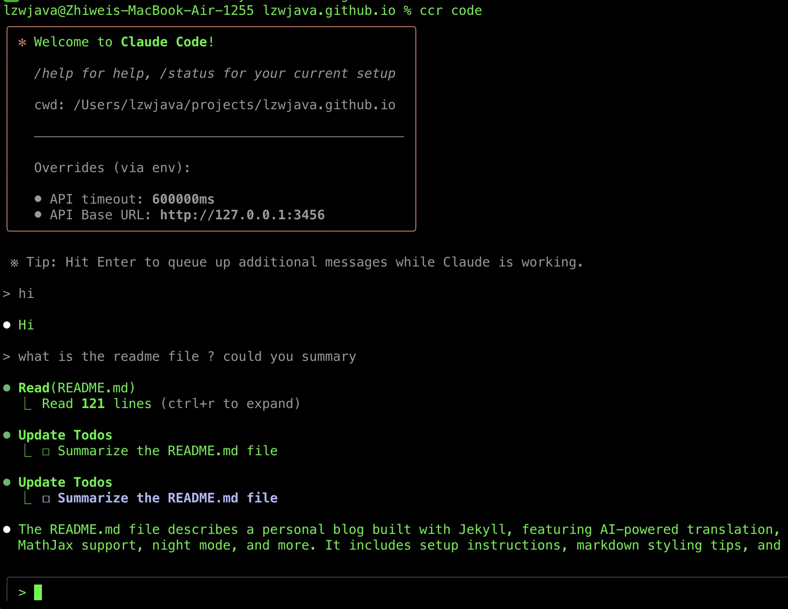
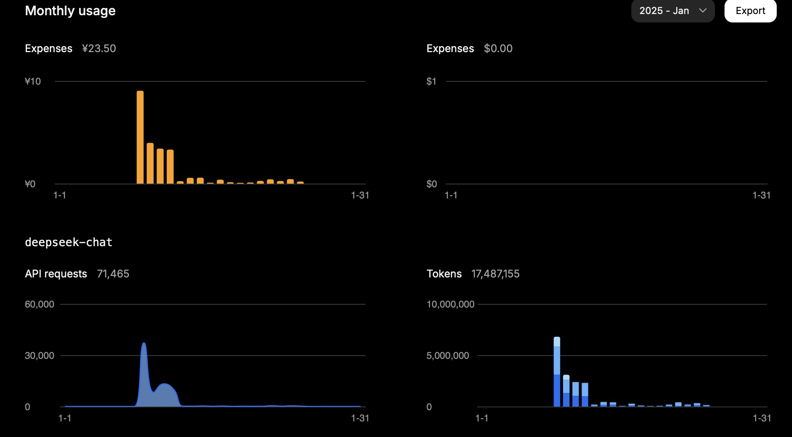

LLM लागत, एजेंट और कोडिंग टूल्स | मूल, AI द्वारा अनुवादित
विषय-सूची
- LLM API की लागत को अनुकूलित करना
- पहले किफायती मॉडल से शुरुआत करें
- अनावश्यक उच्च-स्तरीय मॉडल का उपयोग न करें
- सरल कार्यों के लिए NLP लाइब्रेरी को प्राथमिकता दें
- दक्षता के लिए विशेष एजेंट बनाएँ
- विभिन्न मॉडलों की तुलना करने के लिए परीक्षण करें
- Deepseek और Mistral का API उपयोग
- DeepSeek की लागत कैश मिस के साथ बढ़ती है
- Mistral की लागत में आउटपुट टोकन प्रमुख हैं
- Grok की कीमतें इनपुट टोकन के पक्ष में हैं
- टोकन उपयोग कार्य की जटिलता पर निर्भर करता है
- कीमतें दस्तावेज़ीकृत दरों के अनुरूप हैं
- सामान्य एजेंट बनाम विशेष एजेंट
- सामान्य एजेंट जटिलता से जूझते हैं
- विशेष एजेंट विशिष्ट कार्यों में बेहतर हैं
- वर्कफ़्लो टूल्स लचीलेपन को सीमित करते हैं
- कस्टम Python एजेंट नियंत्रण प्रदान करते हैं
- सुविधा और शक्ति के बीच समझौता
- एक चुस्त इंजीनियर का AI कोडिंग टूल्स पर विचार
- ब्रांड हाइप से ज्यादा व्यावहारिक उपयोगता को प्राथमिकता दें
- VSCode + Copilot विश्वसनीय बना हुआ है
- Claude Code diff-स्टाइल संपादनों से प्रभावित करता है
- व्याकरण टूल्स को मैनुअल सत्यापन की आवश्यकता होती है
- अंधा अपनाने से बेहतर है प्रयोग
LLM API की लागत को अनुकूलित करना
2025.08
 स्रोत: openrouter.ai
स्रोत: openrouter.ai
 स्रोत: openrouter.ai
स्रोत: openrouter.ai
टोकन उपयोग को अनुकूलित करते समय, पहले अधिक किफायती मॉडल से शुरुआत करने की सलाह दी जाती है। यदि समस्याएँ उत्पन्न होती हैं, तो अधिक उन्नत मॉडल पर अपग्रेड करने पर विचार करें। Mistral, Gemini Flash, और DeepSeek आमतौर पर किफायती हैं, जबकि Claude Sonnet अधिक महंगा होता है। यह समझना महत्वपूर्ण है कि Claude Code नीचे दिखाए गए राउटर्स का उपयोग कैसे करता है।
मेरे हाल के अनुभव में, मैंने इस सिद्धांत की अनदेखी करते हुए महत्वपूर्ण लागत वहन की। मैं लागत निर्धारित करने के लिए अपना अधिकतम उपयोग प्राप्त करने की कोशिश कर रहा था, जो एक तर्कसंगत दृष्टिकोण नहीं है; यह एक सरल गणना है। उदाहरण के लिए, क्या मुझे सच में Sonnet 4 की आवश्यकता है? जरूरी नहीं। हालांकि मैं इसे Anthropic का एक अधिक उन्नत मॉडल समझता हूँ और यह OpenRouter पर उच्च स्थान पर है, मुझे Sonnet 4 और Sonnet 3.5 के बीच अंतर स्पष्ट नहीं है।
मैंने Replit के संस्थापक, अमजद मासद के एक हालिया इंटरव्यू से कुछ मूल्यवान सीखा। और कई कार्यों के लिए, अत्यधिक उन्नत मॉडल्स की आवश्यकता नहीं होती है। आदर्श रूप से, यदि हम LLM API का उपयोग बिल्कुल नहीं करते हैं, तो यह बेहतर है। कुछ NLP लाइब्रेरीज़ सरल कार्यों के लिए प्रभावी हैं; उदाहरण के लिए, HanLP चीनी भाषा के कार्यों को संभालने में उत्कृष्ट है।
इसके अतिरिक्त, हम कार्यों को शुरू से ही कुशलता से संभालने के लिए कस्टम या विशेष एजेंट विकसित कर सकते हैं। Claude Code हर कार्य के लिए सर्वोत्तम या सबसे किफायती समाधान नहीं हो सकता है।
मॉडल्स के बीच अंतर समझने का एक तरीका उनका व्यापक उपयोग करना और उनके प्रदर्शन की तुलना करना है। Gemini 2.5 Flash का कुछ समय तक उपयोग करने के बाद, मुझे लगता है कि यह Sonnet 4 से कम सक्षम है।
कुछ दिनों बाद, मैं नीचे दिए गए कॉन्फ़िगरेशन का उपयोग करता हूँ। पैरामीटर longContextThreshold वास्तव में महत्वपूर्ण है। आप Claude Code के कंसोल को समय-समय पर साफ कर सकते हैं, या इसे पुनः आरंभ कर सकते हैं। Claude Code से कोड लिखते समय लॉन्ग कॉन्टेक्स्ट थ्रेसहोल्ड तक पहुँचना बहुत आसान है।
{
"PROXY_URL": "http://127.0.0.1:7890",
"LOG": true,
"Providers": [
{
"name": "openrouter",
"api_base_url": "https://openrouter.ai/api/v1/chat/completions",
"api_key": "",
"models": [
"moonshotai/kimi-k2",
"anthropic/claude-sonnet-4",
"anthropic/claude-3.5-sonnet",
"anthropic/claude-3.7-sonnet:thinking",
"anthropic/claude-opus-4",
"google/gemini-2.5-flash",
"google/gemini-2.5-pro",
"deepseek/deepseek-chat-v3-0324",
"deepseek/deepseek-chat-v3.1",
"deepseek/deepseek-r1",
"mistralai/mistral-medium-3.1",
"qwen/qwen3-coder",
"openai/gpt-oss-120b",
"openai/gpt-5",
"openai/gpt-5-mini",
"x-ai/grok-3-mini"
],
"transformer": {
"use": [
"openrouter"
]
}
}
],
"Router": {
"default": "openrouter,openai/gpt-5-mini",
"background": "openrouter,google/gemini-2.5-flash",
"think": "openrouter,qwen/qwen3-coder",
"longContext": "openrouter,deepseek/deepseek-chat-v3.1",
"longContextThreshold": 2000,
"webSearch": "openrouter,mistralai/mistral-medium-3.1"
}
}
सामान्य एजेंट बनाम विशेष एजेंट
2025.08
Manus एक सामान्य AI एजेंट टूल होने का दावा करता है, लेकिन यह शायद उतना अच्छा काम नहीं करेगा।
एक कारण यह है कि यह बहुत धीमा है, बहुत सारा अनावश्यक काम करता है और अक्षम है। दूसरा कारण यह है कि यदि इसे कोई जटिल समस्या मिलती है या किसी कमजोर बिंदु पर प्रहार होता है, तो आपके कार्य में विफल होने की संभावना है।
विशेष एजेंट बहुत अच्छे हैं क्योंकि वे अत्यधिक विशिष्ट होते हैं। वे बहुत ही विशेष कार्यों के लिए तैयार किए गए हैं। दर्जनों डेटाबेस और सौ से अधिक वेब विकास फ्रेमवर्क जैसे Spring हैं। Vue या React जैसे कई वेब फ्रेमवर्क भी हैं।
Dify AI का उपयोग करके वर्कफ़्लो को जोड़ने पर केंद्रित है, जिसमें AI वर्कफ़्लो को परिभाषित करने के लिए ड्रैग-एंड-कनेक्ट विधि का उपयोग किया जाता है। उन्हें सूचना, डेटा और प्लेटफ़ॉर्म को जोड़ने के लिए बहुत कुछ करने की आवश्यकता है।
मैंने भी कुछ सरल एजेंट बनाए हैं, जैसे Python कोड रिफैक्टरिंग एजेंट, व्याकरण सुधार एजेंट, बग फिक्सिंग एजेंट और निबंध मर्जिंग एजेंट।
कोड बहुत लचीला होता है। इसलिए, Dify संभावित विचारों के स्थान का एक छोटा सा हिस्सा ही कवर करता है।
Manus कार्यों को करता है और एक कंप्यूटर को VNC विधि से प्रदर्शित करके उपयोगकर्ताओं को दिखाता है कि यह कैसे काम करता है।
मुझे लगता है कि भविष्य में इन दोनों दृष्टिकोणों पर स्थिरता आएगी।
Manus के लिए, आपको कार्य करने के लिए कोड या टेक्स्ट अपलोड करने की आवश्यकता होती है, जो सुविधाजनक नहीं है। Dify के साथ, आपको MIT Scratch की तरह ड्रैग और ड्रॉप का उपयोग करके वर्कफ़्लो बनाने की आवश्यकता होती है।
Scratch Python जितना लोकप्रिय क्यों नहीं है? क्योंकि Python के साथ आप बहुत कुछ कर सकते हैं, जबकि Scratch केवल शैक्षिक उद्देश्यों के लिए सरल प्रोग्राम तक ही सीमित है।
Dify में भी शायद इसी तरह की सीमाएँ हैं।
Manus बहुत सारे सरल कार्यों को संभाल सकता है। हालाँकि, कुछ कार्यों के लिए, विशेष रूप से जो Manus की कमजोरियों पर प्रहार करते हैं, यह विफल हो जाएगा।
इसके अलावा, कई प्रोग्राम या सेवाएँ सेटअप करने में समय लेती हैं। Manus के दृष्टिकोण में, यह प्रक्रिया धीमी है।
एक प्रोग्रामर के रूप में, मैं Python के साथ AI का उपयोग करके अपने विशेष एजेंट बनाता हूँ। यह मेरे लिए सबसे सरल दृष्टिकोण है। मैं प्रॉम्प्ट और कॉन्टेक्स्ट सेट कर सकता हूँ ताकि LLM APIs से अपेक्षाकृत स्थिर आउटपुट सुनिश्चित हो सके।
Manus और Dify भी इन LLM APIs के साथ बनाए गए हैं। उनका लाभ यह है कि उनके पास उपयोग के लिए बहुत सारे टूल या कोड पहले से तैयार हैं।
यदि मैं एक ट्विटर बॉट एजेंट बनाना चाहता हूँ, तो ओपन-सोर्स तकनीकों का उपयोग करके खुद से एक बनाने की तुलना में Dify का उपयोग करना अधिक सुविधाजनक हो सकता है।
एक चुस्त इंजीनियर का AI कोडिंग टूल्स पर विचार
2025.08
हाल ही में, मैं सफलतापूर्वक Claude Code चला पाया, इसलिए मैं अपने टूल चयन यात्रा को साझा करना चाहता हूँ। इस दौरान मैंने कुछ AI टूल टिप्स भी एकत्र किए हैं।
मैं Claude Code को अपनाने में काफी देर से आया।
Claude Code फरवरी 2025 के अंत में रिलीज़ हुआ था।
मैं हाल ही में इसे आज़माने में सफल हुआ। एक कारण यह है कि इसके लिए Anthropic API की आवश्यकता होती है, जो चीनी वीज़ा कार्ड्स को सपोर्ट नहीं करती।
दूसरा कारण यह है कि Claude Code Router उपलब्ध हुआ, जिससे मेरी हालिया कोशिश सफल रही।
मैं इसकी तारीफ सुनता रहा हूँ। मैंने जुलाई 2025 में Gemini CLI आज़माया लेकिन अपने कोड को ठीक करने के कई असफल प्रयासों के बाद इसे छोड़ दिया।
मैंने Aider, एक अन्य सॉफ्टवेयर एजेंट भी आज़माया। मैंने लगभग छह महीने के बाद Cursor का उपयोग बंद कर दिया क्योंकि इसके कई VSCode-आधारित प्लगइन्स खराब हो गए थे। इसके अलावा, मैं Cursor को बहुत श्रेय नहीं देना चाहता क्योंकि यह VSCode के ऊपर बनाया गया है। चूंकि VSCode में Copilot प्लगइन हाल ही में बेहतर हुआ है और पीछे नहीं है, मैं इसे अधिक बार उपयोग करना पसंद करता हूँ।
हालाँकि, VSCode Electron पर बनाया गया है, जो एक ओपन-सोर्स तकनीक है। सही टीम या व्यक्ति को श्रेय देना चुनौतीपूर्ण है। यह देखते हुए कि कई बड़ी कंपनियाँ और स्टार्टअप ओपन-सोर्स प्रोजेक्ट्स से लाभ कमाती हैं, मुझे अपने बजट और जो मेरे लिए सर्वोत्तम है, पर ध्यान केंद्रित करना चाहिए। मुझे श्रेय देने के बारे में अधिक चिंता नहीं करनी चाहिए। मैं किफायती और प्रभावी टूल्स का उपयोग करना पसंद करता हूँ।
मैंने संक्षेप में Cline का प्रयोग किया लेकिन इसे अपनाया नहीं।
मैं VSCode में Copilot प्लगइन का उपयोग करता हूँ जिसमें OpenRouter के माध्यम से कस्टमाइज़्ड मॉडल, Grok 3 बीटा है, जो अच्छा काम करता है।
मुझे नहीं लगता कि Claude Code मेरी आदतों को बदलेगा, लेकिन चूंकि मैं इसे सफलतापूर्वक चला सकता हूँ और इसे कुछ और बार आज़माने का धैर्य रखता हूँ, मैं आने वाले हफ्तों में देखूँगा कि मुझे कैसा लगता है।
मैं एक चुस्त उपयोगकर्ता हूँ जिसके पास 10 साल का सॉफ्टवेयर इंजीनियरिंग अनुभव है। मुझे आशा है कि टूल्स वास्तविक उपयोग में महान होंगे। मैं ब्रांड को नहीं मानता—मैं केवल दैनिक उपयोगिता की परवाह करता हूँ।
Claude Code का उपयोग करके इस पोस्ट के व्याकरण को ठीक करने के बाद, मैंने पाया है कि यह कुछ परिदृश्यों में अच्छा काम करता है। जबकि मैं व्याकरण सहायता के लिए AI की सराहना करता हूँ (मैंने इस उद्देश्य के लिए LLM APIs को कॉल करने के लिए एक Python स्क्रिप्ट भी लिखी है), मैंने एक निराशाजनक पैटर्न देखा है—जब मैं न्यूनतम सुधारों का अनुरोध करता हूँ, टूल्स समीक्षा के लिए कई व्याकरण सुझाव प्रस्तुत करते रहते हैं। यह मैनुअल सत्यापन प्रक्रिया स्वचालन के उद्देश्य को हराकर रख देती है। एक समझौते के रूप में, मैं अब AI को पूरे निबंधों को संभालने देता हूँ, हालांकि यह दृष्टिकोण मेरे सीखने के अवसरों को सीमित कर देता है क्योंकि मैं विशिष्ट सुधारों को नहीं देख पाता।
जिस चीज़ ने मुझे सबसे अधिक प्रभावित किया वह यह था कि Claude Code परिवर्तनों को कैसे प्रदर्शित करता है—git डिफ़्स की तरह पहले और बाद के तुलना दिखाता है, जिससे संपादनों की समीक्षा करना बहुत आसान हो जाता है।
एक दिन बाद, मैंने क्लाउड का उपयोग कुछ कोड ठीक करने के लिए भी किया। हालाँकि, मैं Grok 3 बीटा मॉडल के साथ Copilot प्लगइन का उपयोग करता रहता हूँ, क्योंकि यह मेरे लिए सरल और आसान है।
Claude Code का कई दिनों तक उपयोग करने के बाद, मुझे कहना पड़ता है कि यह बहुत प्रभावशाली है। मुझे वास्तव में पसंद है कि यह मेरे कोड को कैसे ठीक करता है।
 स्रोत: स्व-स्क्रीनशॉट
 स्रोत: स्व-स्क्रीनशॉट
स्रोत: स्व-स्क्रीनशॉट
 स्रोत: स्व-स्क्रीनशॉट
स्रोत: स्व-स्क्रीनशॉट
Deepseek और Mistral का API उपयोग
2025.01.25
DeepSeek
एक महीने में, 15 मिलियन टोकन की लागत मुझे लगभग 23.5 CNY हुई।
यह मेरा एक दिन का उपयोग था:
| प्रकार | टोकन |
|---|---|
| इनपुट (कैश हिट) | 946,816 |
| इनपुट (कैश मिस) | 2,753,752 |
| आउटपुट | 3,100,977 |
गणना इस प्रकार है:
0.94 * 0.1 + 2.75 * 1 + 3.10 * 2 = 11.83
इसलिए, कार्य के आधार पर, टोकन उपयोग काफी हद तक इनपुट (कैश मिस) और आउटपुट पर निर्भर करता है।
यह परिणाम अपेक्षित लागत के अनुरूप है।
 स्रोत: स्व-स्क्रीनशॉट
Mistral
Mistral मॉडल्स की कीमतें इस प्रकार हैं:
| मॉडल | इनपुट (मिलियन टोकन प्रति USD) | आउटपुट (मिलियन टोकन प्रति USD) |
|---|---|---|
mistral-large-2411 |
2 | 6 |
mistral-small-latest |
0.2 | 0.6 |
एक दिन में, मेरे Mistral अकाउंट का उपयोग इस प्रकार था (मॉडल: mistral-large-2411):
| प्रकार | टोकन | लागत (USD) |
|---|---|---|
| कुल | 772,284 | 3.44 |
| आउटपुट | 474,855 | 2.85 |
| इनपुट | 297,429 | 0.59 |
mistral-small-2409 मॉडल के लिए, कुल उपयोग 1,022,407 टोकन था।
यह मानते हुए कि इनमें से 1/3 इनपुट टोकन और 2/3 आउटपुट टोकन थे:
340,802 इनपुट टोकन और 681,605 आउटपुट टोकन थे।
इसलिए, कुल लागत की गणना 340,802 * 0.2 / 1,000,000 + 681,605 * 0.6 / 1,000,000 = 0.07 + 0.41 = 0.48 USD के रूप में की गई।
Mistral कंसोल ने कुल उपयोग लागत 0.43 USD रिपोर्ट की है, जो हमारी गणना के अनुरूप है।
Grok
| मॉडल | इनपुट (मिलियन टोकन प्रति USD) | आउटपुट (मिलियन टोकन प्रति USD) |
|---|---|---|
grok-2-latest |
2 | 10 |